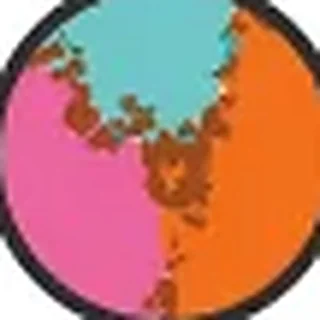
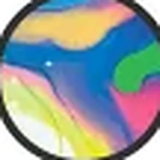
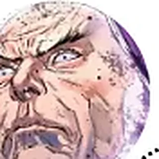

Encyclopédie
301 fiches : entités, cosmos, structures, objets, groupes et événements. Chaque fiche indique ses sources et son niveau de fiabilité.
 Cosmos et firmaments
Cosmos et firmaments1ᵉʳ Firmament : Singularité

Cosmos et firmaments2ᵉ Firmament : Multiversité
Cosmos et firmaments3ᵉ Firmament : La Première Sentinelle et le Tout-Vide
 Cosmos et firmaments
Cosmos et firmaments4ᵉ Firmament : Les Archétypes

Cosmos et firmaments5ᵉ Firmament : Magie
 Cosmos et firmaments
Cosmos et firmaments6ᵉ Firmament : « Science » !!
 Cosmos et firmaments
Cosmos et firmaments7ᵉ Firmament : Marvels
 Cosmos et firmaments
Cosmos et firmaments8ᵉ Firmament : Marvels
 Cosmos et firmaments
Cosmos et firmaments9ᵉ Firmament : Ruines
 Entités abstraites
Entités abstraitesAbraxas
l’anti-Éternité
 Célestes et puissances
Célestes et puissancesAbyss
la sœur d’Ex Nihilo
 Personnages
PersonnagesAdam Warlock
le sauveur cosmique
 Entités abstraites
Entités abstraitesAgamotto
membre des Vishanti
 Personnages
PersonnagesAir-Walker
le héraut xandarien
 Objets de pouvoir
Objets de pouvoirAll-Black
la première arme
 Ténèbres
TénèbresAmatsu-Mikaboshi
le Néant originel
 Entités abstraites
Entités abstraitesAmour
l’attraction universelle
 Événements
ÉvénementsAnnihilation: Conquest
Annihilation: Conquest #1-6
 Personnages
PersonnagesAnnihilus
le seigneur de la Zone Négative
 Célestes et puissances
Célestes et puissancesArishem le Juge
chef de l’Ost Céleste
 Lieux et dimensions
Lieux et dimensionsAsgard (Realm)
le royaume des dieux
 Célestes et puissances
Célestes et puissancesAshema
l’Écoutante
 Événements
ÉvénementsAvengers Forever
Avengers Forever #1-12
 Événements
ÉvénementsAvengers vs. X-Men
Avengers vs. X-Men #1-12
 Cosmos et firmaments
Cosmos et firmamentsBattleworld
après les Secret Wars
Lieux et dimensionsBattleworld (1984)
la planète du Beyonder
 Personnages
PersonnagesBeta Ray Bill
le Korbinite digne
 Personnages
PersonnagesBlue Marvel
le scientifique cosmique
 Personnages
PersonnagesBruce Banner
l’homme derrière Hulk
 Groupes
GroupesCaptain Britain Corps
les gardiens du Multivers
 Entités abstraites
Entités abstraitesCauchemar
le maître des rêves
 Personnages
PersonnagesCelui qui reste
le dernier directeur de la TVA
 Ténèbres
TénèbresChthon
l’auteur du Darkhold
 Cosmos et firmaments
Cosmos et firmamentsCinquième Cosmos
faiseur de magie, tisserand des illusions
 Personnages
PersonnagesClea
la Sorcière suprême
 Groupes
GroupesConseil des Reed
l’assemblée des Reed Richards
 Entités abstraites
Entités abstraitesCyttorak
la force du Fléau
 Lieux et dimensions
Lieux et dimensionsDa’at : Ne-Pouvait-Être
Ni-Ici-Ni-Là · Pays du Peut-Être-Sera
 Groupes
GroupesDeviant Skrulls
les métamorphes
 Célestes et puissances
Célestes et puissancesDevron
l’Expérimentateur
 Lieux et dimensions
Lieux et dimensionsDimension des Beyonders
espace sauvage blanc
 Personnages
PersonnagesDoctor Strange
le Sorcier Suprême
 Personnages
PersonnagesDoom, Dieu-Empereur
le dieu de Battleworld
 Personnages
PersonnagesDormammu
le seigneur de la Dimension Noire
 Personnages
PersonnagesDrax
le destructeur
 Célestes et puissances
Célestes et puissancesEgo
la planète vivante
 Événements
ÉvénementsEmpyre
Empyre #0-6
 Entités abstraites
Entités abstraitesEntropie
l’usure de toute chose
 Entités abstraites
Entités abstraitesEon
le gardien du temps cosmique
 Entités abstraites
Entités abstraitesEpoch
la gardienne du cosmos
 Célestes et puissances
Célestes et puissancesEson le Chercheur
le Céleste qui cherche
 Entités abstraites
Entités abstraitesÉternité
Naissance · Bien · Science
 Entités abstraites
Entités abstraitesÉternité
le temps et l’existence
 Célestes et puissances
Célestes et puissancesEx Nihilo
le jardinier des Bâtisseurs
 Célestes et puissances
Célestes et puissancesExitar l’Exécuteur
le plus grand des Célestes
 Lieux et dimensions
Lieux et dimensionsExo-Espace
espace eldritch · zone neutre
 Personnages
PersonnagesFirelord
le héraut de flamme
 Forces et énergies
Forces et énergiesForce Énigme
le pouvoir du Microvers
Forces et énergiesForce Oméga
la source des Beyonders
 Forces et énergies
Forces et énergiesForce Phénix
vie et renaissance
 Personnages
PersonnagesFranklin Richards
le créateur de mondes
 Entités abstraites
Entités abstraitesGaïa
l’esprit de la Terre
 Célestes et puissances
Célestes et puissancesGalactus
le dévoreur de mondes
PersonnagesGalan de Taa
l’homme avant Galactus
 Lieux et dimensions
Lieux et dimensionsGamaliel : Non-Au-delà
Sous-Moteur · Trône d’Onyx
 Célestes et puissances
Célestes et puissancesGamiel
le Manipulateur
 Célestes et puissances
Célestes et puissancesGammenon le Rassembleur
le collecteur
 Personnages
PersonnagesGamora
la fille adoptive de Thanos
 Groupes
GroupesGardiens de la Galaxie
les protecteurs cosmiques
 Objets de pouvoir
Objets de pouvoirGemme de l’Âme
la gemme orange
 Objets de pouvoir
Objets de pouvoirGemme de l’Espace
la gemme bleue
 Objets de pouvoir
Objets de pouvoirGemme de l’Esprit
la gemme jaune
 Objets de pouvoir
Objets de pouvoirGemme de la Réalité
la gemme rouge
 Objets de pouvoir
Objets de pouvoirGemme du Pouvoir
la gemme violette
 Objets de pouvoir
Objets de pouvoirGemme du Temps
la gemme verte
 Personnages
PersonnagesGenis-Vell
le fils de Mar-Vell
 Lieux et dimensions
Lieux et dimensionsGevurah : Sphère du Jugement
la Cité Brisée
 Personnages
PersonnagesGladiator
le prétorien Shi’ar
 Ténèbres
TénèbresGorr
le massacreur de dieux
 Entités abstraites
Entités abstraitesHaine
la répulsion universelle
 Lieux et dimensions
Lieux et dimensionsHala (Planet)
le monde-trône kree
 Célestes et puissances
Célestes et puissancesHargen
l’Arpenteur
 Personnages
PersonnagesHela
déesse de la mort asgardienne
 Lieux et dimensions
Lieux et dimensionsHeven
le royaume des Anges
 Lieux et dimensions
Lieux et dimensionsHod : Overspace
Jonction vers Partout
 Entités abstraites
Entités abstraitesHoggoth
membre des Vishanti
 Cosmos et firmaments
Cosmos et firmamentsHuitième Cosmos
Malkuth · 2015 – aujourd’hui
 Événements
ÉvénementsHunger
Hunger #1-4
Lieux et dimensionsHyperespace
« sub-space »
 Personnages
PersonnagesIkaris
l’Éternel
 Personnages
PersonnagesImmortus
le maître des Limbes
 Entités abstraites
Entités abstraitesInfinité
Mort · Bien · Magie
 Entités abstraites
Entités abstraitesInfinité
l’espace sans fin
 Événements
ÉvénementsInfinity
Infinity #1-6
 Événements
ÉvénementsInfinity Wars
Infinity Wars #1-6
 Groupes
GroupesInfinity Watch
les gardiens des Gemmes
 Personnages
PersonnagesJean Grey
l’hôte du Phénix
 Célestes et puissances
Célestes et puissancesJemiah l’Analyseur
le savant de l’Ost
 Événements
ÉvénementsJudgment Day
A.X.E.: Judgment Day #1-6
 Personnages
PersonnagesKang le Conquérant
le conquérant du temps
 Lieux et dimensions
Lieux et dimensionsKeter : Maison des Idées
Couronne de la Création
 Lieux et dimensions
Lieux et dimensionsKnowhere
la tête du Céleste
 Ténèbres
TénèbresKnull
le Roi en Noir
 Personnages
PersonnagesKorvac
l’homme devenu dieu
 Groupes
GroupesKree
l’empire militaire
 Entités abstraites
Entités abstraitesKronos
le Titan devenu le Temps
 Entités abstraites
Entités abstraitesKubik
le Cube devenu être
 Objets de pouvoir
Objets de pouvoirL’Annulateur Ultime
l’arme absolue
 Ténèbres
TénèbresL’Anti-Tout
l’ennemi originel
 Personnages
PersonnagesL’Astronome
le Doyen des étoiles
 Lieux et dimensions
Lieux et dimensionsL’Autremonde
le royaume celtique
 Groupes
GroupesL’Église universelle de la vérité
le culte du Magus
 Forces et énergies
Forces et énergiesL’énergie quantique
les Bracelets Quantiques
 Entités abstraites
Entités abstraitesL’Entre-Deux
l’équilibre des contraires
 Objets de pouvoir
Objets de pouvoirL’Épée du crépuscule
l’épée de Surtur
 Entités abstraites
Entités abstraitesL’Étranger
le juge errant
 Ténèbres
TénèbresL’Habitant des ténèbres
le dieu de la peur
 Ténèbres
TénèbresL’Hiver Noir
la fin des univers
 Objets de pouvoir
Objets de pouvoirL’Œil d’Agamotto
l’amulette du Sorcier suprême
 Groupes
GroupesL’Ordre noir
les lieutenants de Thanos
 Entités abstraites
Entités abstraitesL’Ordre-Naturel-des-Choses
Mort · Mal · Science
 Objets de pouvoir
Objets de pouvoirLa Baguette de Watoomb
l’arme mystique
 Lieux et dimensions
Lieux et dimensionsLa Carrière des Dieux
le cœur de l’existence
 Objets de pouvoir
Objets de pouvoirLa Couronne du Serpent
la couronne de Set
 Événements
ÉvénementsLa Croisade de l’Infini
Infinity Crusade #1-6
 Lieux et dimensions
Lieux et dimensionsLa Dimension Noire
le royaume de Dormammu
 Forces et énergies
Forces et énergiesLa Force Noire
l’énergie des ténèbres
Forces et énergiesLa Force Nova
l’énergie des Nova Corps
 Événements
ÉvénementsLa Guerre de l’Infini
Infinity War #1-6
 Événements
ÉvénementsLa Guerre des rois
War of Kings #1-6
 Événements
ÉvénementsLa Guerre Kree-Skrull
Avengers #89-97
ÉvénementsLa Madone céleste
Giant-Size Avengers #4
ÉvénementsLa Mort de Captain Marvel
Marvel Graphic Novel #1
 Groupes
GroupesLa Phalange
le collectif techno-organique
 Entités abstraites
Entités abstraitesLa Reine des Jamais
le Quatrième Cosmos devenu reine
 Lieux et dimensions
Lieux et dimensionsLa Rive Lointaine
bord du Dehors
ÉvénementsLa Saga Korvac
Avengers #167-177
 Groupes
GroupesLa TVA
les gardiens du temps
 Groupes
GroupesLa Vague d’Annihilation
l’armée de la Zone négative
 Objets de pouvoir
Objets de pouvoirLe Bâton de contrôle cosmique
le sceptre d’Annihilus
 Personnages
PersonnagesLe Beyonder
l’enfant de l’Au-delà
 Lieux et dimensions
Lieux et dimensionsLe Cancerverse
l’univers sans mort
 Lieux et dimensions
Lieux et dimensionsLe Carrefour
la dimension des passages
 Personnages
PersonnagesLe Champion
le Doyen lutteur
 Objets de pouvoir
Objets de pouvoirLe Cœur de l’Univers
la source de toute puissance
 Personnages
PersonnagesLe Collectionneur
le conservateur cosmique
 Groupes
GroupesLe Conseil Oméga
les gardiens du moteur
 Personnages
PersonnagesLe Contemplateur
le Doyen méditant
 Personnages
PersonnagesLe Coureur
le Doyen de la vitesse
 Objets de pouvoir
Objets de pouvoirLe Cristal M’Kraan
le nexus des réalités
 Objets de pouvoir
Objets de pouvoirLe Cube Cosmique
le cube qui exauce
 Objets de pouvoir
Objets de pouvoirLe Darkhold
le livre des péchés
 Personnages
PersonnagesLe Déchu
le premier héraut
Lieux et dimensionsLe Dessous
vrai enfer sous tous les autres
 Célestes et puissances
Célestes et puissancesLe Fulcrum
le dieu des Célestes
 Objets de pouvoir
Objets de pouvoirLe Gant de l’Infini
les six gemmes réunies
 Personnages
PersonnagesLe Grand Maître
le joueur éternel
 Personnages
PersonnagesLe Jardinier
le Doyen botaniste
 Lieux et dimensions
Lieux et dimensionsLe Kyln
la prison cosmique
 Personnages
PersonnagesLe Magus
le futur sombre d’Adam
 Personnages
PersonnagesLe Maker
le Reed Richards maléfique
 Personnages
PersonnagesLe Marchand
le Doyen du négoce
 Lieux et dimensions
Lieux et dimensionsLe Mojovers
la dimension spectacle
 Personnages
PersonnagesLe Possesseur
le Doyen survivant
 Forces et énergies
Forces et énergiesLe Pouvoir Cosmique
l’énergie de Galactus
 Événements
ÉvénementsLe procès de Reed Richards
Fantastic Four #262
 Célestes et puissances
Célestes et puissancesLe Progéniteur
le Céleste malade
 Forces et énergies
Forces et énergiesLe rayonnement gamma
la porte verte
 Lieux et dimensions
Lieux et dimensionsLe Royaume des Rêves
le domaine de Cauchemar
 Événements
ÉvénementsLe Tournoi des champions
Contest of Champions #1-3
 Entités abstraites
Entités abstraitesLe Un-Au-Dessus-de-Tout
tout en haut
Entités abstraitesLe Un-Au-Dessus-de-Tout
le créateur suprême
 Entités abstraites
Entités abstraitesLe Un-En-Dessous-de-Tout
tout en bas
TénèbresLe Un-En-Dessous-de-Tout
le mal absolu
 Célestes et puissances
Célestes et puissancesLes Aleph
les éradicateurs
 Groupes
GroupesLes Anciens de l’Univers
les derniers survivants
 Ténèbres
TénèbresLes Anges Multiples
les seigneurs du Cancerverse
 Groupes
GroupesLes Annihilators
les poids lourds cosmiques
 Célestes et puissances
Célestes et puissancesLes Aspirants
serviteurs du Premier Firmament
 Groupes
GroupesLes Bâtisseurs
les architectes de l’univers
Entités abstraitesLes Beyonders
seigneurs de l’Au-delà
 Groupes
GroupesLes Cartographes
les nettoyeurs de réalités
 Célestes et puissances
Célestes et puissancesLes Célestes
architectes du cosmos
 Célestes et puissances
Célestes et puissancesLes Célestes Noirs
l’Ost Final
 Groupes
GroupesLes Defenders (2021)
les voyageurs des cosmos
 Groupes
GroupesLes Déviants
la branche instable
 Célestes et puissances
Célestes et puissancesLes Dieux Proémiaux
les premiers dieux
 Groupes
GroupesLes Éternels
les immortels créés par les Célestes
 Célestes et puissances
Célestes et puissancesLes Gardiens
les observateurs
 Groupes
GroupesLes Gardiens du Temps
les maîtres de la TVA
 Objets de pouvoir
Objets de pouvoirLes Gemmes d’Infinité
Espace, Réalité, Pouvoir, Âme, Esprit, Temps
 Groupes
GroupesLes Illuminati
le conseil secret
 Groupes
GroupesLes Magistrati
les hérauts du Tribunal
Lieux et dimensionsLes Manifestations
les Infinis
 Groupes
GroupesLes Prêtres Noirs
les chasseurs de mondes
GroupesLes Rois d’Ivoire
les seigneurs blancs
 Forces et énergies
Forces et énergiesLes symbiotes
la Ruche de Knull
 Groupes
GroupesLes Ultimates
les résolveurs de problèmes cosmiques
 Groupes
GroupesLes Vishanti
la trinité mystique
 Entités abstraites
Entités abstraitesLes-Pouvoirs-Qui-Sont
Naissance · Bien · Magie
 Personnages
PersonnagesLifebringer One
le premier héros
 Lieux et dimensions
Lieux et dimensionsLilith : Limbes
Autre-Lieu · Royaume démoniaque
 Entités abstraites
Entités abstraitesLogos
le Verbe du Premier Firmament
 Personnages
PersonnagesLoki
le dieu des histoires
Lieux et dimensionsMalkuth : Huitième Cosmos
Multivers Marvel · 2015 – présent
 Personnages
PersonnagesMantis
la Madone céleste
 Personnages
PersonnagesMar-Vell
le premier Captain Marvel
 Personnages
PersonnagesMentor
le père de Thanos
 Personnages
PersonnagesMéphisto
le seigneur d’un enfer
 Lieux et dimensions
Lieux et dimensionsMicrovers
univers subatomique
 Personnages
PersonnagesMiss America
la voyageuse des réalités
 Objets de pouvoir
Objets de pouvoirMjolnir
le marteau de Thor
 Personnages
PersonnagesMolecule Man
la bombe des Beyonders
 Personnages
PersonnagesMoondragon
la télépathe de Titan
 Personnages
PersonnagesMorg
le bourreau
 Entités abstraites
Entités abstraitesMoridun / Omnimax
Sorcier Suprême du Cinquième Cosmos
 Entités abstraites
Entités abstraitesMort
la fin de toute vie
Lieux et dimensionsMultivers
le Vortex Cosmique
 Personnages
PersonnagesNebula
la petite-fille de Thanos
 Entités abstraites
Entités abstraitesNémésis
l’être d’avant tout
 Lieux et dimensions
Lieux et dimensionsNetzach : Bien Au-delà des Mondes
le jardin où pousse la magie
 Lieux et dimensions
Lieux et dimensionsNexus de toutes les réalités
le carrefour des mondes
 Célestes et puissances
Célestes et puissancesNezarr le Calculateur
le mathématicien
 Personnages
PersonnagesNova (Frankie Raye)
la héraut de feu
 Personnages
PersonnagesNova (Richard Rider)
le dernier centurion
 Groupes
GroupesNova Corps
la police de Xandar
 Personnages
PersonnagesOdin
le Père de toutes choses
Lieux et dimensionsOmnivers
toutes les fictions
 Célestes et puissances
Célestes et puissancesOneg le Sondeur
l’explorateur
 Événements
ÉvénementsOperation Galactic Storm
Captain America #398
 Entités abstraites
Entités abstraitesOrdre Suprême
Naissance · Mal · Science

Entités abstraitesOrdre Suprême
la loi absolue
 Événements
ÉvénementsOriginal Sin
Original Sin #1-8
 Entités abstraites
Entités abstraitesOshtur
membre des Vishanti
 Entités abstraites
Entités abstraitesOubli
Mort · Mal · Magie
 Entités abstraites
Entités abstraitesOubli
le néant
Lieux et dimensionsOverspace
royaume des Abstraits
Cosmos et firmamentsPremier Cosmos
le premier firmament, l’univers originel
 Personnages
PersonnagesQuasar
le protecteur de l’univers
Cosmos et firmamentsQuatrième Cosmos
le Pèlerin, habité par les archétypes
PersonnagesRabum Alal
le Dieu-Fatalité
 Personnages
PersonnagesRed Shift
le héraut artificiel
 Personnages
PersonnagesReed Richards
le rebâtisseur
 Personnages
PersonnagesRonan
l’Accusateur kree
 Lieux et dimensions
Lieux et dimensionsSakaar
la planète de l’exil
 Lieux et dimensions
Lieux et dimensionsSamael : Underspace
sous le Microvers
 Entités abstraites
Entités abstraitesSatannish
le démon des pactes
 Célestes et puissances
Célestes et puissancesScathan
l’Approbateur
 Cosmos et firmaments
Cosmos et firmamentsSecond Cosmos
le premier multivers, origine de la Force Oméga
 Événements
ÉvénementsSecret Invasion
Secret Invasion #1-8
 Entités abstraites
Entités abstraitesSeigneur Chaos
Naissance · Mal · Magie
 Entités abstraites
Entités abstraitesSeigneur Chaos
le désordre
 Personnages
PersonnagesSentry
le héros et le Void
Cosmos et firmamentsSeptième Cosmos
Multivers Marvel 1961 – 2015
 Personnages
PersonnagesSersi
l’Éternelle
 Ténèbres
TénèbresSet
le dieu-serpent
 Groupes
GroupesShi’ar
l’empire aviaire
 Ténèbres
TénèbresShuma-Gorath
l’Ancien aux tentacules
 Personnages
PersonnagesSilver Surfer
le héraut de Galactus
Cosmos et firmamentsSixième Cosmos
inventeur de la science, bâtisseur de la jonction
 Personnages
PersonnagesStar-Lord
le chef des Gardiens
 Forces et énergies
Forces et énergiesStarbrand
l’arme planétaire
 Personnages
PersonnagesStardust
le héraut zélé
 Personnages
PersonnagesStarfox
le frère de Thanos
 Lieux et dimensions
Lieux et dimensionsSuperflow
espace onirique entre les réalités
 Lieux et dimensions
Lieux et dimensionsTaa II
le vaisseau-monde
 Personnages
PersonnagesTaaia
la mère de Galan
 Lieux et dimensions
Lieux et dimensionsTagiriron : Chambre Noire et Froide
Royaume des Ombres · Terre Sans Soleils
 Célestes et puissances
Célestes et puissancesTefral
l’Inspecteur
 Personnages
PersonnagesTerrax
le dompteur de mondes
 Personnages
PersonnagesThanos
le Titan fou
 Événements
ÉvénementsThanos Imperative
Thanos Imperative #1-6
 Lieux et dimensions
Lieux et dimensionsThaumiel : le Dessous
Terres-du-Dessous · Royaume Gamma
 Personnages
PersonnagesThor
dieu du tonnerre, héraut un temps
 Célestes et puissances
Célestes et puissancesTiamut, le Céleste Mourant
le Céleste exilé
 Lieux et dimensions
Lieux et dimensionsTiferet : Chambre Blanche Ardente
Cœur de toutes choses
 Lieux et dimensions
Lieux et dimensionsTitan
la lune des Éternels
 Entités abstraites
Entités abstraitesTribunal Vivant
Mort · Bien · Science
 Entités abstraites
Entités abstraitesTribunal Vivant
juge du multivers
 Cosmos et firmaments
Cosmos et firmamentsTroisième Cosmos
le commencement du récit, créateur de Lifebringer One
 Personnages
PersonnagesTyrant
la créature rebelle de Galactus
 Personnages
PersonnagesUatu
le Gardien de la Terre
 Entités abstraites
Entités abstraitesUmar
la sœur de Dormammu
Lieux et dimensionsUnderspace
le Royaume Quantique
 Forces et énergies
Forces et énergiesUni-Esprit
la conscience collective des Éternels
 Forces et énergies
Forces et énergiesUni-Power
Captain Universe
 Lieux et dimensions
Lieux et dimensionsUnivers · Terre
le cœur de la carte
 Objets de pouvoir
Objets de pouvoirUru
le métal d’Asgard
 Personnages
PersonnagesVenom
le nouveau dieu des symbiotes
Lieux et dimensionsVide Extérieur
abîme d’Infinité
 Lieux et dimensions
Lieux et dimensionsWeirdworld (Planet)
le monde étrange
 Personnages
PersonnagesWiccan
le futur Démiurge
 Lieux et dimensions
Lieux et dimensionsXandar
le monde des Nova
 Lieux et dimensions
Lieux et dimensionsYesod : l’Au-delà
Salle des Machines
 Lieux et dimensions
Lieux et dimensionsYggdrasil
l’arbre-monde
 Célestes et puissances
Célestes et puissancesZgreb
l’Aspirant
 Célestes et puissances
Célestes et puissancesZiran le Testeur
l’éprouveur
 Entités abstraites
Entités abstraitesZom
la puissance emprisonnée
 Lieux et dimensions
Lieux et dimensionsZone bleue de la Lune
l’oasis kree
 Lieux et dimensions
Lieux et dimensionsZone Négative
univers d’antimatière
 Personnages
PersonnagesZuras
le chef des Éternels